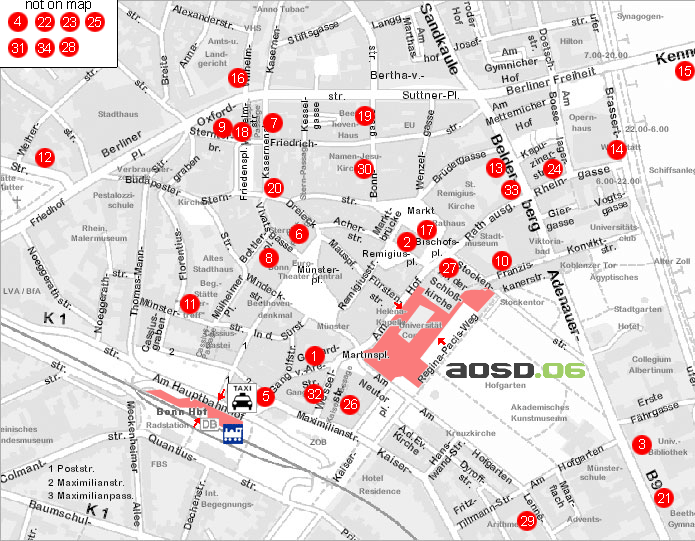

Restaurants
There are numerous restaurants in Bonn, especially inside and close to the city center (marked with ). Below is a selection of the local organizing committee.
International
- (1) Aktuell, Gerhard-von-Are-Str. 8, Phone (0228) 653077
Offers a large variety of meals from snacks to steaks and newspapers from all over the world. Also try the vegetarian offers.
Main dishes: 8-24€
- (2) Bonngout, Remigiusplatz 2-4, Phone (02 28) 65 89 88
Tasty snacks with an Italian touch.
Main dishes: 8-14€
- (3) Zur Lese, Adenauerallee 37, Phone (02 28) 22 33 22
International restaurant specialized on whine.
Main dishes: 17-20€
- (4) Parkrestaurant Rheinaue, inside Rheinaue Leisure Park, Phone (02 28) 37 40 30
Offers cakes, local meals and more - and a panorama view over the Rheinaue. On fridays "Fireplace Dinner" (reservation required).
Main dishes: 23-30€
Vegetarian
- (5) Cassius Garten, Maximilianstr. 9, Phone (0228) 652429
If you are looking for meat, go elsewhere! But if you are a vegetarian, this is your inn.
You pay your meal per weight. (~ 4-8€, reduced prices in the evening)
Bistros
- (6) Pendel, Citypassage, Phone (0228) 9766064
Decorated with a lot of clocks, this cozy bistro offers everything from snacks to meals.
- (7) Cartoon, Kasernenstraße 16, Phone (0228) 698526
Same owner as Pendel. Offers a lot of salads and toasts.
- (8) Cafe Giaccomo, Bottlerplatz 10, Phone (0228) 9695408
In-style-cafe.
- (9) Spitz, Sterntorbrücke 10, Phone (0228) 697430
Offers mostly italian snacks. Also try the salads or cakes.
- (10) Munzert’s, Franziskanerstraße 7, Phone (0228) 3361858
Soup restaurant, offering four (daily changing) soups and fresh bread for 3-5€.
Cocktail Bars
- (11) Che Guevara, Münsterstraße 9, Phone (0170) 3467516
More than 120 fresh cocktails, including 25 without alcohol.
- (12) Shakers, Bornheimer Straße 26, Phone (0228) 9814490
American-style cocktail bar offering about 150 different cocktails at the longest bar table of Bonn.
- (13) Habanero, Belderberg 11, Phone (0228) 9678333
A touch of Cuba with tasty meals and more than 150 cocktails.
Chinese
- (14) China Hongkong, Brassertufer 1, Phone (0228) 651706
Old-established Chinese restaurant next to the Rhine. Also offers a great variety of meals for vegetarians.
Main dishes: 7-13€
- (15) Ocean Paradise, Rheinufer/Kennedybrücke, Phone (02 28) 97 63 988
Boat restaurant, leaves its place at 8:30pm on fridays, saturdays and sundays. Known for its Sa-Za seafood.
Main dishes: 8-14€
French
- (16) Le Petit Poisson, Wilhelmstraße 23a, Phone (02 28) 63 38 83
Gourmet Restaurant. Try the fish!
Three price levels: 35, 45, 55€
German
- (17) Em Höttche, Markt 4, Phone (0228) 690009
Bonn's oldest inn, dating from 1389. Offers traditional local meals.
Main dishes: 9-16€
- (18) Brauhaus Bönnsch, Sterntorbrücke 4, Phone (0228) 650610
Specialized on Bönnsch (the beer of Bonn) and huge Schnitzels.
Main dishes: 9-16€
- (19) Im Stiefel, Bonngasse 30, Phone (0228) 696596.
Offers local specialities and good cakes.
Main dishes: 7-14€
- (20) Zum Gequetschten, Sternstr. 78, Phone (0228) 638104
Local specialities.
Main dishes: 5-14€
- (21) Bonner Republik, Adenauerallee 70, Phone (02 28) 2 80 49 70
The "political restaurant". Serves meals named after politicians.
Main dishes: 5-14€
- (22) Zur Lindenwirtin Aennchen, Aennchenplatz 2, Phone (0228) 312051
Old-established gourmet restaurant in Bad-Godesberg. Please reserve your table.
Main dishes: 19-24€
Greek
- (23) Bodega 2, Am Burggraben 1, Phone (0228) 626250
Small restaurant specialized on fowl and lamb. Please reserve a table.
Main dishes: 9-15€
Indian
- (24) Taste of India, Rheingasse 13, Phone (0228) 9768288
Live-cooked northern indian meals. Only opened after 6pm on weekdays.
Main dishes: 10-16€
Irish
- (25) Fiddlers
All-original Irish Pub with Irish food, Irish beer, Irish whiskey and English-only-speaking waiters.
Main dishes: 5-17€
Italian
- (26) Casa del Gatto, Kaiserplatz 20, (0228) 69 55 22
Italian, Mexican and Spanish meals at affordable prices.
Main dishes: 5-9€
- (27) Grand Italia, Bischofsplatz 1, Phone (0228) 638333
Fresh pasta! And everything else...
Main dishes: 21-26€
- (28) Tuscolo, Kaiser-Karl Ring 63, Phone (0228) 694665
Good pizzas, larger than the largest plates - for just around 10€. Please reserve your table.
- (29) Il Punto, Lennéstraße 6, Phone (02 28) 26 38 33
One of the best Italian restaurants in Bonn. Be sure to ask the waiters for their recommendations and meals of the day!
Main dishes: Sorry, no pricing details available.
Mexican
- (30) Tacos, Bonngasse 7, Phone (02 28) 65 51 85
Mexican food in great quantities.
Main dishes: 6,50-14€
Oriental
- (31) Restaurant Karawane, Adrianstraße 10 (entry at Baumstraße), Phone (0228) 9449680
Oriental food with a unique concept: There's no menu, instead you get a dish with nine meals to try. You choose three, eat as much as you can and pay only 13.50€. Please reserve your table!
Spanish
- (32) Maredo, Wesselstr. 5, Phone (0228) 636512
Steak house with a heart for vegetarians.
Main dishes: 8-20€
- (33) Take Two, Rathausgasse 15, Phone (0228) 9814983
In-style-restaurant, also offering a lot of cocktails.
- (34) Rincon De España, Karthäuserplatz 21, Phone (0228) 239609
Spanish atmosphere and affordable prices.
Main dishes: 5-10€.
Fast Food
- Pizza Hut, Münsterplatz 24, Phone (0228) 634109
- McDonalds, spread all over the city center, e.g. near main station or at market square
- Subway, spread all over the city center, e.g. near main station
- Bagel Brothers, next to the main station
Restaurant Map

Edited by the AOSD Conference Committee. Send comments to: webmaster aosd.net aosd.net
|
|